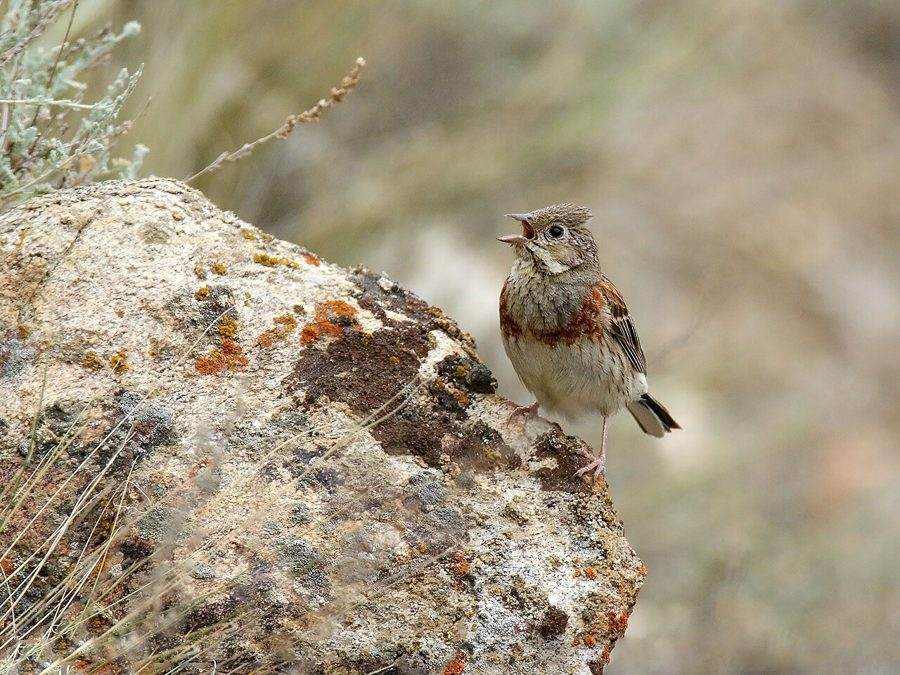

व्हाइट-कैप्ड बंटिंगWhite-capped Bunting
Emberiza stewarti · Emberizidae · BRD-0358

- Scientific name वैज्ञानिक नाम
- Emberiza stewarti (Blyth, 1854)
- Family कुल
- Emberizidae
- Hindi हिंदी
- व्हाइट-कैप्ड बंटिंग
- Local names स्थानीय नाम
- white capped bunting
- Status here यहाँ की स्थिति
- native
- Movement आवागमन
- Winter visitor
- Known from कहाँ दर्ज
- Others have published records from the wider Awadh–Purvanchal plain, none yet from Basti–Ayodhya अवध–पूर्वांचल से दूसरों के प्रकाशित अभिलेख, बस्ती–अयोध्या से अभी नहीं
- IUCN IUCN
- LC
- Review समीक्षा
- not yet reviewed
When to look कब देखें
Winter visitor शीतकालीन प्रवासी. Expected mainly in January, February, March, April, October, November, December. मुख्यतः जनवरी, फ़रवरी, मार्च, अप्रैल, अक्टूबर, नवंबर, दिसंबर में अपेक्षित।
Breeds in the Himalayas and northwest montane valleys; GBIF records in Uttar Pradesh fall between October and April. All migrants and visitors →
Tell it apart from इनसे अलग पहचानें
व्हाइट-कैप्ड बंटिंग / White-capped Bunting
Emberiza stewarti (Blyth, 1854) — Emberizidae
व्हाइट-कैप्ड बंटिंग — उत्तर-पश्चिम हिमालय से सर्दियों में उत्तर भारत के मैदानों में आने वाली एक सुंदर छोटी गौरैया जैसी चिड़िया। बेकर (1926) के अनुसार ग्रीष्मकालीन नर का मुकुट धूसर होता है, आंखों पर काली पट्टी, गला काला तथा सीना सफेद और निचला सीना बादामी होता है; पीठ चेस्टनट होती है। यह सर्दियों में खुली घास, झाड़ियों और खेतों में जमीन पर भोजन तलाशती है।
Quick Identification त्वरित पहचान
| Feature | Description |
|---|---|
| Habit | Ground-feeding bunting of grass meadows, thin scrub and open cultivation |
| Size | Small finch-like bird, similar in dimensions to a common sparrow |
| Male Plumage | Grey crown; black eyestripe and throat; fore neck and breast white; anterior flanks and lower breast rufous; chestnut mantle (Baker 1926, p. 203) |
| Female Plumage | Ashy-brown above streaked with black; rufous rump; pale dull fulvous below streaked with brown (Baker 1926, p. 204) |
| Tail | Dark brown tail, the outermost pair white (Baker 1926, p. 203) |
| Soft Parts | Iris dark brown to red-brown; bill horny-brown, paler below; legs fleshy-pink (Baker 1926, p. 203) |
Field tip: Look for a sparrow-sized bird with a grey cap, black face-mask and throat, white breast, and chestnut mantle on dry ground (Baker 1926).
हिंदी:
नर के सिर पर धूसर टोपी, आंख और गले पर काला रंग, सीना सफेद तथा निचला सीना बादामी होता है; मादा धारीदार भूरी होती है (बेकर 1926)।
Morphology आकारिकी
Measurements as given by Baker (1926):
| Measurement | Range |
|---|---|
| Biometrics | Total length about 160 mm. ; wing 80 to 85 mm. ; tail 70 to 73 mm. ; tarsus about 19 to 20 mm. ; culmen 10 to 11 mm. (Baker 1926) |
The White-capped Bunting shows marked plumage differences between sexes and seasons. Stuart Baker (1926, p. 203) described the male in breeding plumage: "Whole crown and nape grey ; a broad supercilium from the bill to the nape, lores and feathers round the eye black ; whole upper plumage, scapulars and lesser wing-coverts chestnut, the feathers of the mantle with obsolete black central streaks... ear-coverts white ; chin, throat and sides of neck behind the ear-coverts black ; fore neck and breast white ; anterior flanks and lower breast rufous".
In fresh winter plumage after the autumn moult, the black of the throat is obscured by whitish feather fringes and the chestnut upperparts are softened by grey edgings (Baker 1926, p. 204). Females are ashy-brown above with blackish streaks and a rufous rump (Baker 1926, p. 204).
हिंदी:
बेकर (1926) के अनुसार इसकी कुल लंबाई लगभग 160 मिमी, पंख 80 से 85 मिमी, पूंछ 70 से 73 मिमी, टार्सस 19 से 20 मिमी और कल्मेन 10 से 11 मिमी होता है। सर्दियों में इसके काले गले पर सफेद किनारे आ जाते हैं।
Behaviour & Ecology व्यवहार और पारिस्थितिकी
Stuart Baker (1926, p. 204) recorded: "It inhabits grass meadows and hillsides, thin scrub-jungle and open cultivation, feeding almost entirely on the ground and not collecting in large flocks, even in Winter."
हिंदी:
बेकर (1926) के अनुसार यह घास के मैदानों, झाड़ियों और खुली खेती में जमीन पर भोजन तलाशती है। सर्दियों में भी यह बड़े झुंड नहीं बनाती।
Life Cycle / Phenology जीवन चक्र
This species does not breed on the Gangetic plain; it visits Uttar Pradesh as a winter migrant between October and April.
On its breeding range in the western Himalayas, Stuart Baker (1926, p. 204) recorded: "In Kashmir and the Himalayas generally the breeding-season is April and May, occasional second broods being raised in June and early July".
हिंदी:
यह मैदानों में प्रजनन नहीं करती; उत्तर प्रदेश में यह सर्दियों में आती है। बेकर (1926) के अनुसार कश्मीर और हिमालय में इसका प्रजनन काल अप्रैल और मई है।
Host Plants or Prey आहार
No source opened for this atlas lists the food of this bird.
हिंदी:
इस एटलस के लिए खोले गए किसी भी स्रोत में इस पक्षी के विशिष्ट भोजन की सूची नहीं है।
Predators / Natural Enemies शत्रु
No source opened for this atlas names a specific predator of this bird.
हिंदी:
इस एटलस के लिए खोले गए किसी भी स्रोत में इस पक्षी के किसी विशिष्ट शिकारी का नाम नहीं है।
Agricultural / Human Relevance कृषि प्रासंगिकता
No source opened for this atlas describes this bird's dealings with people. Protected under the Wildlife (Protection) Act, 1972.
हिंदी:
इस एटलस के लिए खोले गए किसी भी स्रोत में लोगों के साथ इस पक्षी के व्यवहार या संबंधों का विवरण नहीं है। यह वन्यजीव (संरक्षण) अधिनियम, 1972 के तहत संरक्षित है।
Expected Locally स्थानीय रूप से अपेक्षित
Not a field record. Written from published accounts for eastern Uttar Pradesh. No confirmed local sighting yet — if you have seen it, that is what the atlas needs.
अभी तक स्थानीय पुष्टि नहीं। यह विवरण प्रकाशित स्रोतों से है, किसी अवलोकन से नहीं।
GBIF holds published records from the wider Awadh–Purvanchal plain, none yet from Basti–Ayodhya.
In Uttar Pradesh, published winter records are known from Lakhimpur Kheri (seven records), Lucknow (two records), and Bahraich (one record), gathered by eight observers between 2014 and 2025 during October to April.
A first record would be a photograph of the bird with place and date, sent through the About page.
Distribution वितरण
Stuart Baker (1926, p. 204) gave the breeding distribution: "Persia, Turkestan, Afghanistan, Baluchistan, Gilgit and Kashmir to Murree, Mussoorie and Garhwal", noting that in winter it moves "South to the Plains of the North-West Provinces" and in the Habits section stated that birds wander "into the plains of the Punjab, North-West Frontier Provinces, Sind and Rajputana as far East as Etawah" (Baker 1926, p. 204).
In Uttar Pradesh, published modern records from Lucknow, Lakhimpur Kheri, and Bahraich lie east of Etawah. GBIF holds no record from Basti or Ayodhya.
हिंदी:
बेकर (1926) के अनुसार इसका प्रजनन उत्तर-पश्चिम हिमालय में होता है और सर्दियों में यह इटावा तक मैदानों में आती है। आधुनिक रिकॉर्ड लखनऊ, लखीमपुर खीरी और बहराइच से भी प्राप्त हुए हैं।
Research Questions शोध प्रश्न
- What plant seeds form the principal winter diet of White-capped Buntings foraging in harvested rabi stubbles in Awadh? / अवध के खेतों में रबी की कटाई के बाद यह बंटिंग मुख्य रूप से किन पौधों के बीज चुगती है?
- Does the species regularly extend eastward along the dry sandy banks of the Ghaghara and Gomti drainage systems? / क्या यह पक्षी घाघरा और गोमती के रेतीले किनारों के सहारे पूर्व की ओर बढ़ता है?
- What is the ratio of adult males to cryptically plumaged females and first-winter birds in wintering flocks?
- How do flocking tendencies differ between White-capped Buntings and wintering Red-headed Buntings?
- Can local birdwatchers record the arrival week in autumn across northern Uttar Pradesh? (Amateur birders can scan fallow fields for black-throated buntings beginning in October.)
Similar Species मिलती-जुलती प्रजातियाँ
| Species | How to tell apart | हिंदी | |
|---|---|---|---|
| [[crested_bunting | Crested Bunting]] (Emberiza lathami) | Conspicuous pointed crest on crown, entirely blackish body in male with bright chestnut wings and tail | कलगीदार गौरैया |
| [[red_headed_bunting | Red-headed Bunting]] (Emberiza bruniceps) | Bright golden-yellow underparts, yellowish-green mantle, and chestnut-red head in breeding males without black throat | गंदम |
Field rule: The combination of grey crown, black mask and throat, white breast, rufous lower breast, and chestnut mantle separates the male White-capped Bunting (Baker 1926).
हिंदी:
गंदम का पेट चमकीला पीला होता है; व्हाइट-कैप्ड बंटिंग के सिर पर धूसर टोपी, काला गला और सीना सफेद होता है।
Taxonomy & Classification वर्गीकरण
Original description. Described by Edward Blyth in 1854 in Journal of the Asiatic Society of Bengal (Vol. 23, p. 215), under the name Emberiza stewarti. The type locality is Kotegarh near Simla, western Himalayas.
Synonyms and historical names. Stuart Baker (1926, p. 203) and Blanford and Oates retained the species under the genus Emberiza.
Subspecies. Monotypic. Baker (1926, p. 204) recognized no subspecies across its range.
Family and order placement. Order Passeriformes, family Emberizidae (buntings), genus Emberiza.
IUCN status rationale. Evaluated as Least Concern (LC) by the IUCN Red List (BirdLife International 2018).
हिंदी:
एडवर्ड ब्लाइथ ने 1854 में शिमला के पास कोटगढ़ से इसका वर्णन किया था। यह एम्बेरिज़िडी (बंटिंग) कुल का सदस्य है और संकटमुक्त (LC) है।
Photo Gallery फोटो गैलरी
No photos yet — add field photos to media/species/white_capped_bunting/ and run node scripts/sync_photos.js.
Photos needed आवश्यक फोटो
- [ ] Male perched on a stone or clod of earth showing grey cap and black throat (जमीन पर बैठा नर जिसमें धूसर सिर और काला गला दिखे)
- [ ] View of female in fallow field showing streaked upperparts and rufous rump (खेत में बैठी मादा की धारीदार पीठ और लाल कमर का दृश्य)
References संदर्भ
- Blyth, E. (1854). Journal of the Asiatic Society of Bengal. Vol. 23. Bishop's College Press, Calcutta, p. 215 (as Emberiza stewarti).
- Baker, E. C. S. (1926). The Fauna of British India, Including Ceylon and Burma. Birds. Vol. 3. 2nd ed. Taylor & Francis, London, pp. 203–204 (as Emberiza stewarti).
- Ali, S. & Ripley, S. D. (1987). Compact Handbook of the Birds of India and Pakistan. 2nd ed. Oxford University Press, New Delhi.
- Grimmett, R., Inskipp, C. & Inskipp, T. (2011). Birds of the Indian Subcontinent. 2nd ed. Christopher Helm, London.
- Rasmussen, P. C. & Anderton, J. C. (2012). Birds of South Asia: The Ripley Guide. 2nd ed. Smithsonian Institution and Lynx Edicions, Washington, D.C. and Barcelona.
- BirdLife International (2018). Emberiza stewarti. The IUCN Red List of Threatened Species 2018: e.T22720884A132003759. doi:10.2305/IUCN.UK.2018-2.RLTS.T22720884A132003759.en
- GBIF Occurrence Data — Emberiza stewarti, India (2025).
Source file: species/fauna/birds/white_capped_bunting.md